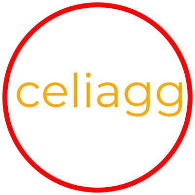

Code Example¶
Here’s how celiagg can be used to render a red circle with the word “celiagg” inside:
1 2 3 4 5 6 7 8 9 10 11 12 13 14 15 16 17 18 19 20 21 22 23 | import celiagg as agg
import numpy as np
from PIL import Image
state = agg.GraphicsState(drawing_mode=agg.DrawingMode.DrawStroke,
line_width=10.0)
transform = agg.Transform()
red_paint = agg.SolidPaint(1.0, 0.0, 0.0)
orange_paint = agg.SolidPaint(0.99, 0.66, 0.0)
canvas = agg.CanvasRGB24(np.zeros((400, 400, 3), dtype=np.uint8))
path = agg.Path()
path.ellipse(200, 200, 190, 190)
canvas.clear(1.0, 1.0, 1.0)
canvas.draw_shape(path, transform, state, stroke=red_paint)
font = agg.Font(agg.example_font(), 96.0)
transform.translate(30.0, 220.0)
canvas.draw_text("celiagg", font, transform, state, fill=orange_paint)
image = Image.fromarray(canvas.array, "RGB")
image.save("example.png")
|
Which gives the resulting image:
Code Breakdown¶
Imports¶
First, we include some libraries. numpy is needed for the memory buffer
which the canvas drawns into. PIL is used for simple image file I/O.
Finally, celiagg is imported for obvious reasons:
1 2 3 | import celiagg as agg
import numpy as np
from PIL import Image
|
State setup¶
Next, some state objects are created. Most important is the
celiagg.GraphicsState object. Pay attention to the
drawing_mode=agg.DrawingMode.DrawStroke keyword argument. This means that
all drawing calls using this state will only draw the outline of the shapes
being drawn.
The remaining state objects are transform which sets the affine
transformation of the drawing and red_paint/orange_paint which determine
the color of strokes (outlines) or fills when drawing.
5 6 7 8 9 | state = agg.GraphicsState(drawing_mode=agg.DrawingMode.DrawStroke,
line_width=10.0)
transform = agg.Transform()
red_paint = agg.SolidPaint(1.0, 0.0, 0.0)
orange_paint = agg.SolidPaint(0.99, 0.66, 0.0)
|
Canvas creation¶
Then, also quite important, a canvas object is created. The canvas is a
400 x 400 pixel RGB bitmap with 8-bits per component.
11 | canvas = agg.CanvasRGB24(np.zeros((400, 400, 3), dtype=np.uint8))
|
Draw a circle¶
We’re now ready to do some drawing. A path object is created to describe the
shape that will be drawn. In this case, it’s an ellipse with an equal width and
height of 190 pixels, ie: a circle. Because the canvas was instantiated with
np.zeros, we call the canvas.clear method first to clear the background
color to white. Finally, the circle is drawn with canvas.draw_shape.
13 14 15 16 | path = agg.Path()
path.ellipse(200, 200, 190, 190)
canvas.clear(1.0, 1.0, 1.0)
canvas.draw_shape(path, transform, state, stroke=red_paint)
|
Draw some text¶
Next up, some text. We’ll use the Montserrat font which is included with
celiagg, conveniently available via the example_font function. A font
object is created with a point size of 96. The transform gets a
translation of (30, 220) set. This corresponds to a point which is 30 pixels
from the left side of the image and 220 pixels from the top of the image.
(celiagg defaults to a top-left origin, but also supports bottom-left origin)
The text will be drawn starting from that point.
18 19 20 | font = agg.Font(agg.example_font(), 96.0)
transform.translate(30.0, 220.0)
canvas.draw_text("celiagg", font, transform, state, fill=orange_paint)
|
Note
Even though state specifies a drawing_mode of DrawStroke, the
text will still be rendered as filled instead of drawing an outline. This
is because text drawing mode is separate from the main [shape] drawing mode.
text_drawing_mode in state defaults to
agg.TextDrawingMode.TextDrawRaster. To draw text as vector data,
state.text_drawing_mode can be set to something like
agg.TextDrawingMode.TextDrawStroke. All modes except TextDrawRaster
are drawn as vectors. Note that there is a performance penalty paid for this
flexibility, but it allows things like patterned fills.
Save¶
Last but not least, the image is written to a PNG file for enjoyment in your favorite image viewer.
22 23 | image = Image.fromarray(canvas.array, "RGB")
image.save("example.png")
|